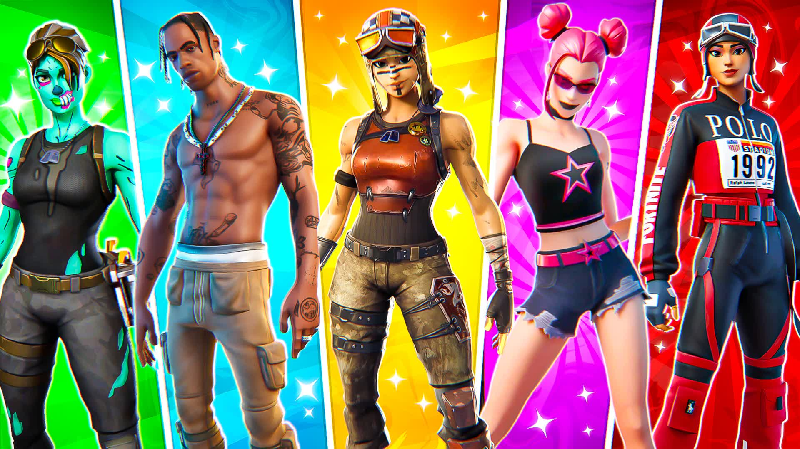

O que são skins?
As skins são aparências utilizadas para personalizar os personagens dos jogadores.

Colaborações
Fortnite ficou conhecido por realizar colaborações com diversas franquias, artistas, filmes e outros jogos.
As skins são aparências utilizadas para personalizar os personagens dos jogadores.

Fortnite ficou conhecido por realizar colaborações com diversas franquias, artistas, filmes e outros jogos.